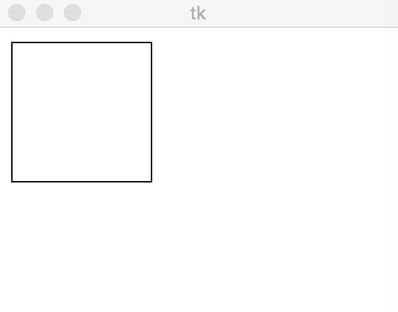

Python Tkinter キャンバス（Canvas）
Python Tkinter のキャンバス（Canvas）ウィジェットは、html5 のキャンバスと同様に、描画に使用されます。グラフィック、テキスト、ウィジェット、またはフレームをキャンバス上に配置できます。
構文
構文は次のとおりです：
w = Canvas ( master, option=value, ... )
master: ボタンの親コンテナ。
options: オプション。このボタンに設定できる属性です。これらのオプションは キー=値 の形式で設定し、カンマで区切ります。
| 番号 | オプション & 説明 |
|---|---|
| 1 | bd 枠線の幅（単位はピクセル）。デフォルトは2ピクセルです。 |
| 2 | bg 背景色 |
| 3 | confine true（デフォルト）の場合、キャンバスはスクロール可能な領域の外へスクロールできません。 |
| 4 | cursor カーソルの形状設定。例: arrow, circle, cross, plus など |
| 5 | height 高さ |
| 6 | highlightcolor ハイライトする色 |
| 7 | relief 枠線スタイル。指定可能な値は FLAT、SUNKEN、RAISED、GROOVE、RIDGE。デフォルトは FLAT です。 |
| 8 | scrollregion タプル (w, n, e, s) で、キャンバスがスクロールできる最大領域を定義します。w は左、n は上、e は右、s は下です。 |
| 9 | width キャンバスのX軸方向のサイズ。 |
| 10 | xscrollincrement スクロール要求時に水平方向にスクロールする量の値。 |
| 11 | xscrollcommand 水平スクロールバー。キャンバスがスクロール可能な場合、この属性は水平スクロールバーの .set() メソッドです。 |
| 12 | yscrollincrement xscrollincrement に似ていますが、垂直方向です。 |
| 13 | yscrollcommand 垂直スクロールバー。キャンバスがスクロール可能な場合、この属性は垂直スクロールバーの .set() メソッドです。 |
Canvas ウィジェットは以下の標準オプションをサポートしています：
arc − 扇形を作成
coord = 10, 50, 240, 210 arc = canvas.create_arc(coord, start=0, extent=150, fill="blue")
image − 画像を作成
filename = PhotoImage(file = "sunshine.gif") image = canvas.create_image(50, 50, anchor=NE, image=filename)
line − 線を作成
line = canvas.create_line(x0, y0, x1, y1, ..., xn, yn, options)
oval − 円を作成
oval = canvas.create_oval(x0, y0, x1, y1, options)
polygon − 少なくとも3つの頂点を持つ多角形を作成
oval = canvas.create_polygon(x0, y0, x1, y1,...xn, yn, options)
例
例では、ボタンをクリックするとメッセージが表示されます：
例
テスト出力結果は次のとおりです：

その他の拡張